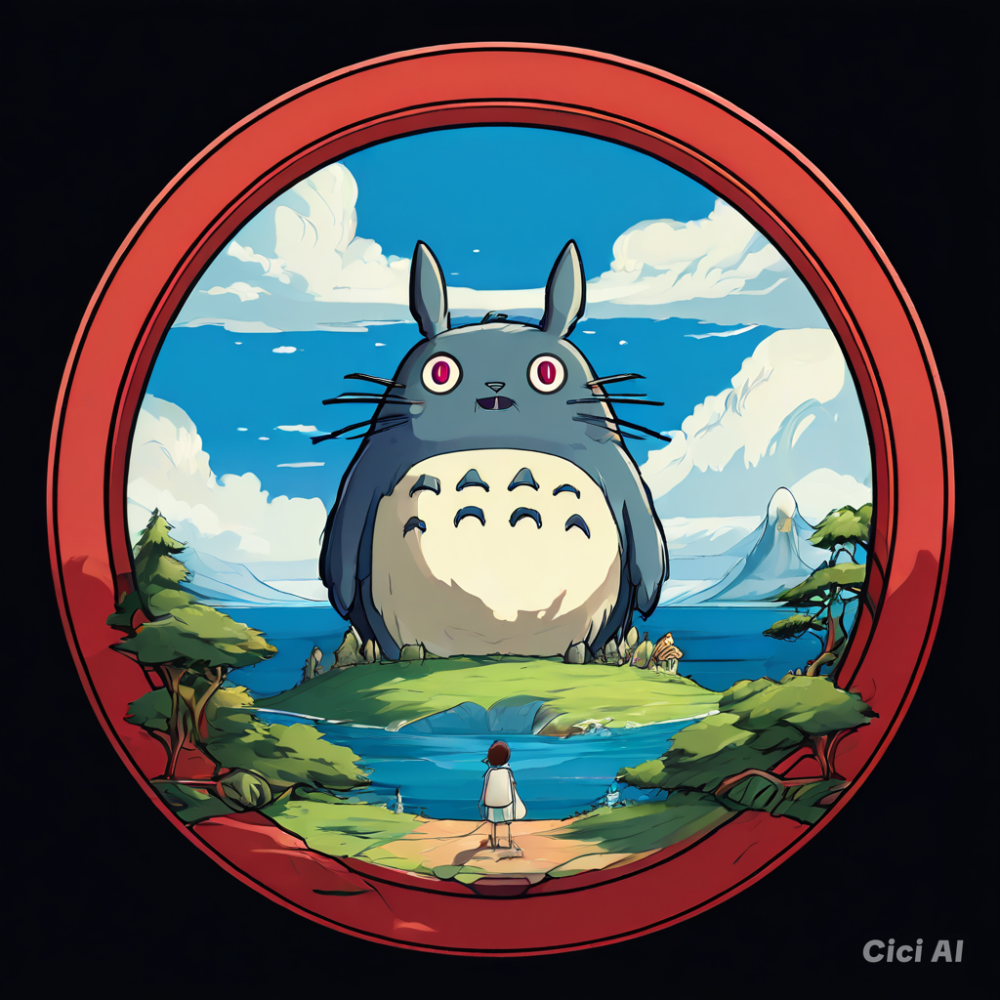

STUDIO GHIBLI
Selamat datang di Ghilbiverse, komunitas online terbesar untuk para penggemar Studio Ghibli! Bergabunglah dengan ribuan penggemar lainnya untuk berbagi kecintaan kita pada film-film animasi yang menakjubkan, karakter-karakter ikonik, dan musik yang memukau. Temukan diskusi, fanart, berita terbaru, dan banyak lagi! Jelajahi dunia magis Studio Ghibli bersama kami!
Ghilbiverse: Destinasi utama untuk semua hal tentang Studio Ghibli. Temukan ulasan film, galeri gambar menakjubkan, database karakter lengkap, soundtrack, berita terkini, dan artikel mendalam yang menggali dunia imajinatif Studio Ghibli. Selami keajaiban animasi Jepang yang luar biasa!
Jelajahi dunia Studio Ghibli bersama kami di Ghilbiverse! Berbagi foto favoritmu, diskusikan teori penggemar, ikuti kuis, dan temukan komunitas yang penuh semangat. Ghilbiverse adalah tempat untuk terhubung dengan sesama penggemar dan merayakan keajaiban Studio Ghibli. Gabung sekarang!
Benamkan dirimu dalam dunia magis Studio Ghibli di Ghilbiverse, situs web penggemar yang didedikasikan untuk merayakan film-film animasi yang luar biasa, musik yang memikat, dan karakter-karakter yang tak terlupakan. Dari Spirited Away hingga My Neighbor Totoro, temukan ulasan film, fanart menakjubkan dari komunitas kami yang berbakat, berita terbaru, dan banyak lagi. Bergabunglah dengan komunitas kami yang berkembang dan bagikan kecintaanmu pada Studio Ghibli!